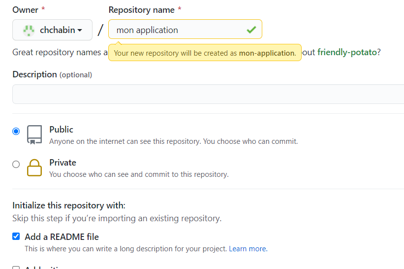
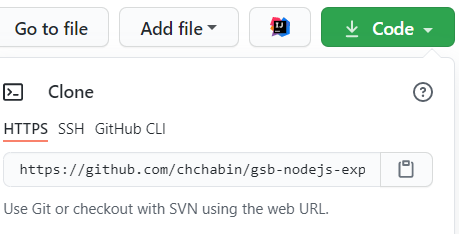

Ceci est une procédure simplifiée
1 - Créer un dépôt sur github
Pour mettre votre projet sur GitHub, vous devez créer un référentiel dans lequel il pourra être
installé.
Cliquez sur le "+" dans le coin supérieur droit, pour faire apparaître l’option New repository
Choisissez un nom simple pour votre dépôt, choisissez si vous souhaitez créer un dépôt public ou
privé, initialiser un readme.

2 - Créer son dépôt en local
Il s'agit maintenant de cloner le dépôt distant sur le dépôt local.

Vous devez récupérer l'adresse du lien HTTPS, et saisir :
git clone https://github.com/chchabin/mon-application.git
Git va créer un répertoire vide à l'emplacement où est saisi le code. Vous pouvez aussi cloner un
dépôt complet, dans ce cas, git va créer un dossier et y télécharger tout le code source du projet
ainsi que l'historique de chacune des modifications.
3 - Travailler sur un dépôt local git
a - pour ignorer les fichiers
Pour ignorer un fichier dans Git, il faut créer un fichier .gitignore à la racine du
dossier projet et indiquer les nom des fichiers à ignorer.
Les fichiers contenus dans .gitignore ne seront pas pris en compte dans les
commits. Le contenu peu ressembler à ça :
Dans ce cas, le répertoire travail qui est à la racine du fichier ne sera pas
enregistré par git.
b - effectuer un commit
Pour ajouter l'ensemble des fichiers à la liste des fichiers à commiter :
Effectuer un commit (enregistrement de la version par git) :
git commit -m "explication"
Le message permet d'identifier la fonctionnalité des commits.
Envoie du commit vers le dépôt distant :
git push -u origin master
Le commit est envoyé sur la branche principale du dépôt (master). Cela ne pose aucun problème si
vous travaillez seul.
4 - Quelques instruction utiles
Vous obtiendrez la liste des fichiers non encore ajoutés à votre git, et la liste des fichiers
déjà ajoutés, mais n'ayant pas encore été mis a jour dans votre git depuis leur dernière
modification.
Obtenir une liste de tous vos commit et de leurs commentaires.
Pour chaque commit, la première ligne correspond au sha du commit.
Ici, 756b85e921aced5d41d538eaf2eff65e03d4be0f correspond au sha-1 du commit
Voici d'autres instructions :
git log -n2 /* affiche les 2 derniers commits*/
git show sha-1 /* voir commit spécifique (cliquer molette souris pour coller)*/
git checkout sha-1 /* remettre la version du sha-1*/
git checkout master /* remettre la version la plus récente*/
5 - Ma page personnelle
Vous pouvez vous créer une page personnelle ou un site pour votre portefeuille de compétence avec Github.
Il suffit de donner comme nom de fichier : votrepseudo.github.io .